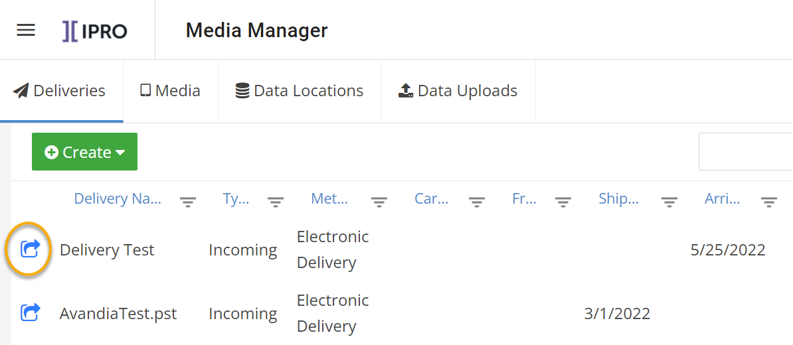
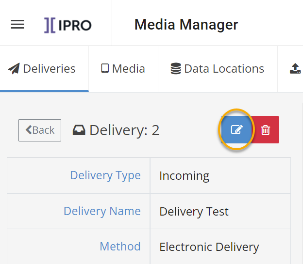

Ensure you have correct information and know your firm’s conventions for delivery details.
In Media Manager, click the Deliveries tab.
Locate the needed delivery in the Deliveries list.
|
|
See |

Double-click
the delivery to be changed or click the corresponding  .
.

In the
delivery details form, click  .
.

Make the needed changes and click Save.

 for the
delivery (in the Delivery form).
for the
delivery (in the Delivery form).